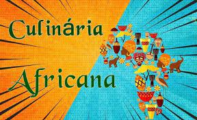

<!DOCTYPE html>
<html lang="pt-br">
</head>
<meta charset="utf-8">
<title><afro-brasileira></title>
<link rel="stylesheet" href="style.css">
</html>
</head>

</body>


<div class="principal">
    <h2 class="titulo-centralizado">como surgiu:</h2>

    <p>Os africanos escravizados tiveram que recriar seus quitutes com os ingredientes locais.<strong>Em lugar do inhame</strong> usaram a mandioca; e para substituir 
    o sorgo, utilizaram o milho.A culinária afro-brasileira tem sua origem com a chegada dos negros escravizados à colônia. Os africanos escravizados tiveram que 
    recriar seus quitutes com os ingredientes locais.Uma das principais características da culinária da África é a diversidade de alimentos e modos de preparo, 
    que variam de um país para outro. Carne vermelha, grãos, tubérculos, leite e leguminosas fazem parte da tradição e da história da culinária africanaA culinária 
    afro-brasileira tem sua origem com a chegada dos negros escravizados à colônia</p>
 
    </div>
     <div class="beneficios">
        <h3 class="titulo centralizado">Os pratos afro-brasileiros:</h3>
        <ul>
            <li class="itens">rabada</li>
            <li class="itens">feijoada</li>
            <li class="itens">galinha com quiabo</li>
            <li class="itens">acarajé</li>
            <li class="itens">canja</li>
            <li class="itens">pirão</li>
            <li class="itens">angu</li>
            <li class="itens">canjica</li>
        </ul>
        <h2 class="titulo-centralizado">como chegou ao brasil:</h2>

        <p>Os caldos, extraídos dos alimentos assados, misturados com farinha de mandioca (o pirão) ou com farinha de milho (o angu), são uma herança dos africanos. 
        Podemos lembrar que da África também vieram ingredientes tão importantes como o coco e o café.</p>
        
     </div>
   </body>
   </html>